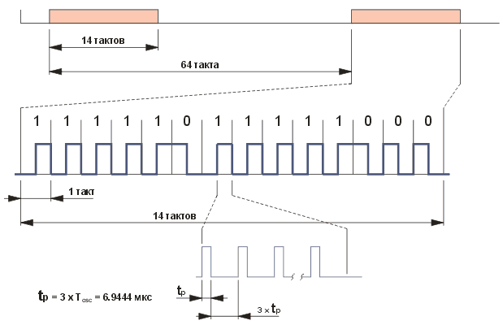
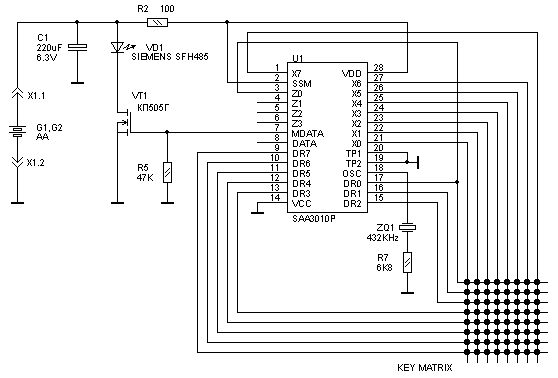

ИК система управления отображением информации
Введение.
Прежде чем была реализована ИК система управления отображением информации, мне пришлось пересмотреть массу справочной информацию. В Internet сейчас очень много подобной информации. Я постарался в одной статье объединить накопленные знания. Я благодарен всем, кто сделал доступной информацию по вопросу декодирования ИК команд фомата RC5. А также всем тем, кто занимается сопряжением разрабатываемых устройств с РС. Так как в сети порой трудно найти автора той или иной информации (информация просто дублируется на нескольких сайтах, немного видоизменяясь), я прошу авторов написать мне письмо и я укажу ваше авторство. Со своей строны я выкладываю все исходники. Используйте в своих разработках. Если публикуете на своем сайте , оставляйте банер со ссылкой на мой сайт или иным образом указывайте авторство.
В сети Internet много простых устройств на базе контроллеров семейства PIC16F и PIC18F фирмы Microchip. Я предлагаю вашему вниманию достаточно сложное устройство. Эта статья думаю будет полезна всем, кто пишет программы для PIC18F, так как вы можете взяв исходные тексты программы создать свою систему реального времени. Информации будет предостаточно, начиная от теории и стандартов, заканчивая аппаратной и программной реализацией данного проекта. Исходные тексты на асемблере снабжены полными коментариями. Поэтому не сложно будет разобраться в программе.
Идея.
Как всегда все начинается с идеи. Имеем карту Ставропольского края. На карте имеется 26 районов края. Размер карты 2х3м. Необходимо управлять подсветкой выбранных районов. Управление должно осуществляться дистанционно по инфракрасному каналу управления, далее по тексту просто ИК или IR remote control. Одновременно команды управления должны передаваться на сервер управления на базе РС. При выборе района на карте, сервер управления отображает дополнительную инфомацию на мониторе. По командам с сервера можно управлять отображением информации на карте. Задача поставлена. В конечном итоге мы получили, то что вы видите на фото. Но прежде чем все это реализовать пришлось пройти некоторые этапы и решить различные технические задачи.
ИК система управления отображением информации.
Вид со стороны монтажа.
Алгоритм работы устройства.
С пульта дистанционного управления система управления отображением информации
должна управляться не сложнее выбора программы на TV или задания номера трека на CD.
Было решено пульт взять готовый от видеомагнитофона PHILIPS.
Выбор номера район задается последовательным нажатим кнопок пульта "Р+"
далее две цифровые кнопки номера района, заканчиваем ввод "Р-".
При первом выборе района осуществляется его выделение, (включается подсветка светодиодами)
а при повторном выборе снимается выделение.
Протокол управления картой с РС сервера управления.
1. Исходящие команды, т.е. команды поступающие с устройства в РС:
1.1. При включении питания на устройстве в РС поступает команда:MAP999[0D]
1.2. При включении района: MAP(номер района)1[0D]
1.3. При выключении района: MAP(номер района)0[0D]
1.4. При включении всей карты: MAP001[0D]
1.5. При выключении всей карты: MAP000[0D]
2. Входящие команды:
2.1. Включить всю карту: MAP001[0D]
2.2. Выключить всю карту: MAP000[0D]
2.3. Включить район: MAP(номер района)1[0D]
2.4. Выключить район: MAP(номер района)0[0D]
2.5. Получить информацию о включенных районах: MAP999[0D]
В ответ на эту команду передаются данные о всех включенных районах в формате п. 1.2
(как будто все включенные районы заново включаются).
2.6. Получить информацию о выключенных районах: MAP995[0D]
В ответ на эту команду передаются данные о всех выключенных районах в формате п. 1.3
(как будто все выключенные районы заново выключаются).
При выключении последнего включенного района также должна поступать команда "выключение всей карты".
При включении последнего невключенного района также должна поступать команда "включение всей карты".
Номер района представляет собой ASCII-символы цифр (0x30-0x39).
От идеи к реализации.
Предвидя, что довольно сложной проблемой может оказаться изготовление собственного корпуса для пульта ДУ, было решено взять готовый пульт ДУ от серийного аппарата. За основу системы ИК управления выбрана система команд ИК управления формата RC5. В настоящее время для управления различной аппаратурой очень широко используется дистанционное управление (ДУ) на ИК-лучах. Пожалуй, первым видом бытовой аппаратуры, где использовалось ИК ДУ, были телевизоры. Сейчас ДУ имеется в большинстве видов бытовой аудио- и видеотехники. Даже переносные музыкальные центры в последнее время все чаще оборудуют системой ДУ. Но бытовая техника это не единственная сфера применения ДУ. Довольно широко распространены приборы с ДУ и на производстве, и в научных лабораториях. В мире существует достаточно много не совместимых между собой систем ИК ДУ. Наибольшее распространение получила система RC-5. Эта система используется во многих телевизорах, в том числе и отечественных. В настоящее время разными заводами выпускается несколько модификаций пультов ДУ RC-5, причем, некоторые модели имеют вполне приличный дизайн. Это позволяет с наименьшими затратами получить самодельное устройство с ИК ДУ. Опуская подробности, почему была выбрана именно эта система, расмотрим теорию построения система на базе формата RC5.
Теория.
Что бы понять как работает система управления необходимо вникнуть, что же представляет собой сигнал на выходе пульта ИК ДУ.
Система инфракрасного дистанционного управления RC-5 была разработана фирмой Philips для нужд управления бытовой аппаратурой. Когда мы нажимаем кнопку пульта, микросхема передатчика активизируется и генерирует последовательность импульсов, которые имеют заполнение частотой 36 КГц. Светодиоды преобразуют эти сигналы в ИК-излучение. Излученный сигнал принимается фотодиодом, который снова преобразует ИК-излучение в электрические импульсы. Эти импульсы усиливаются и демодулируются микросхемой приемника. Затем они подаются на декодер. Декодирование обычно осуществляется программно с помощью микроконтроллера. Об этом мы подробно поговорим в разделе посвященному декодированию. Код RC5 поддерживает 2048 команд. Эти команды составляют 32 группы (системы) по 64 команды в каждой. Каждая система используется для управления определенным устройством, таким как телевизор, видеомагнитофон и т.д.
На заре становления систем ИК управления формирование сигнала происходило аппаратно. Для этого разрабатывались специализированные ИС, а сейчас все чаще пульты ДУ делаются на основе микроконтроллера.
Одной из наиболее распространенных микросхем передатчика является микросхема SAA3010. Кратко рассмотрим ее характеристики.
- Напряжение питания – 2 .. 7 В
- Потребляемый ток в ждущем режиме – не более 10 мка
- Максимальный выходной ток - ±10 мА
- Максимальная тактовая частота – 450 КГц
Рисунок 1. Структурная схема ИС SAA3010.
Описание выводов микросхемы SAA3010 приведено в таблице:
| Вывод | Обозначение | Функция |
| 1 | X7 | Входные линии матрицы кнопок |
| 2 | SSM | Вход выбора режима работы |
| 3-6 | Z0-Z3 | Входные линии матрицы кнопок |
| 7 | MDATA | Модулированные выходные данные, 1/12 частоты резонатора, скважность 25% |
| 8 | DATA | Выходные данные |
| 9-13 | DR7-DR3 | Выходы сканирования |
| 14 | VSS | Земля |
| 15-17 | DR2-DR0 | Выходы сканирования |
| 18 | OSC | Вход генератора |
| 19 | TP2 | Тестовый вход 2 |
| 20 | TP1 | Тестовый вход 1 |
| 21-27 | X0-X6 | Входные линии матрицы кнопок |
| 28 | VDD | Напряжение питания |
Микросхема передатчика является основой пульта дистанционного управления. На практике один и тот же пульт дистанционного управления может использоваться для управления несколькими устройствами. Микросхема передатчика может адресовать 32 системы в двух различных режимах: комбинированном и в режиме одной системы. В комбинированном режиме сначала выбирается система, а затем команда. Номер выбранной системы (адресный код) хранится в специальном регистре и происходит передача команды, относящейся к этой системе. Таким образом, для передачи любой команды требуется последовательное нажатие двух кнопок. Это не совсем удобно и оправдано только при работе одновременно с большим количеством систем. На практике передатчик чаще используется в режиме одной системы. При этом вместо матрицы кнопок выбора системы монтируется перемычка, которая и определяет номер системы. В этом режиме для передачи любой команды требуется нажатие только одной кнопки. Применив переключатель, можно работать с несколькими системами. И в этом случае для передачи команды требуется нажатие только одной кнопки. Передаваемая команда будет относится к той системе, которая в данное время выбрана с помощью переключателя.
Для включения комбинированного режима на вывод передатчика SSM (Single System
Mode) нужно подать низкий уровень. В этом режиме микросхема передатчика работает
следующим образом: во время покоя X и Z-линии передатчика находятся в состоянии
высокого уровня с помощью внутренних p-канальных подтягивающих транзисторов.
Когда нажата кнопка в матрице X-DR или Z-DR, запускается цикл подавления
дребезга клавиатуры. Если кнопка замкнута на протяжении 18 тактов, фиксируется
сигнал "разрешение генератора". В конце цикла подавления дребезга DR-выходы
выключаются и запускаются два цикла сканирования, включающие по очереди каждый
выход DR. В первом цикле сканирования обнаруживается Z-адрес, во втором -
X-адрес. Когда Z-вход (матрица системы) или X-вход (матрица команды)
обнаруживается в состоянии нуля, происходит фиксация адреса. При нажатии кнопки
в матрице системы передается последняя команда (т.е. все биты команды равны
единице) в выбираемой сиcтеме. Эта команда передается до тех пор, пока кнопка
выбора системы не будет отпущена. При нажатии кнопки в матрице команды
передается команда вместе с адресом системы, хранимом в регистре-фиксаторе. Если
кнопка отпущена до начала передачи, происходит сброс. Если же передача
началась, то независимо от состояния кнопки, она будет выполнена полностью. Если
одновременно нажато более одной Z или X кнопки, то генератор не запускается.
Для включения режима одной системы на выводе SSM должен быть высокий
уровень, а адрес системы должен быть задан соответствующей перемычкой или
переключателем. В этом режиме во время покоя X-линии передатчика находятся в
состоянии высокого уровня. В то же время Z-линии выключены для предотвращения
потребления тока. В первом из двух циклов сканирования определяется адрес
системы и сохраняется в регистре-фиксаторе. Во втором цикле определяется номер
команды. Эта команда передается вместе с адресом системы, хранимом в
регистре-фиксаторе. Если нет перемычки Z-DR, то никакие коды не передаются.
Если кнопка была отпущена между посылками кода, то происходит сброс. Если
кнопка была отпущена во время процедуры подавления дребезга или во время
сканирования матрицы, но до обнаружения нажатия кнопки, то также происходит
сброс. Выходы DR0 – DR7 имеют открытый сток, в состоянии покоя транзисторы
открыты.
В коде RC-5 имеется дополнительный управляющий бит, который
инвертируется при каждом отпускании кнопки. Этот бит информирует декодер о том,
удерживается кнопка или произошло новое нажатие. Бит управления инвертируется
только после полностью завершенной посылки. Циклы сканирования производятся
перед каждой посылкой, поэтому даже если во время передачи посылки сменить
нажатую кнопку на другую, все равно номер системы и команды будут переданы
правильно.
Вывод OSC представляет собой вход/выход 1-выводного генератора и предназначен для подключения керамического резонатора на частоту 432 КГц. Последовательно с резонатором рекомендуется включть резистор сопротивлением 6,8 Ком.
Тестовые входы TP1 и TP2 в нормальном режиме работы должны быть соединены с землей. При высоком логическом уровне на TP1 повышается частота сканирования, а при высоком уровне на TP2 – частота работы сдвигового регистра.
В состоянии покоя выходы DATA и MDATA находятся в Z-состоянии. Генерируемая передатчиком на выходе MDATA последовательность импульсов имеет заполнение частотой 36 кГц (1/12 частоты тактового генератора) со скважностью 25%. На выходе DATA генерируется такая же последовательность, но без заполнения. Этот выход используется в том случае, когда микросхема передатчика выполняет функции контроллера встроенной клавиатуры. Сигнал на выходе DATA полностью идентичен сигналу на выходе микросхемы приемника дистанционного управления (но в отличие от приемника он не имеет инверсии). Оба этих сигнала могут обрабатываться одним и тем же декодером. Применение SAA3010 в качестве контроллера встроенной клавиатуры в некоторых случаях очень удобно, так как для опроса матрицы до 64 кнопок у микроконтроллера расходуется только один вход прерывания. Тем более, что микросхема передатчика допускает питание напряжением +5 В.
Передатчик генерирует 14-битное слово данных, формат которого следующий:
- 2 стартовых бита. - 1 управляющий бит. - 5 бит адреса системы. - 6 бит команды.
Рисунок 2. Формат слова данных кода RC-5.
Стартовые биты предназначены для установки АРУ в IC приемника. Управляющий бит является признаком нового нажатия. Длительность такта составляет 1.778 мс. Пока кнопка остается нажатой, слово данных передается с интервалом 64 такта, т.е. 113.778 мс (рис. 2).
Первые два импульса являются стартовыми, и
оба - логические "1". Отметим, что половина бита (пустая)
проходит раньше, чем приемник определит реальный старт
сообщения.
Расширенный RC5 протокол использует только 1
старт-бит. Бит S2 трансформируется и добавляетсяк 6-му биту
команды, образуя в целом 7 битов команды.
Третий бит - управляющий. Этот бит инвертируется всякий раз, когда
нажимается клавиша. Таким путем приемник может различать
клавишу, которая остается нажатой, или периодически
нажимается.
Следующие 5 бит представляют адресс ИК
устройства, который посылается с первым LSB. За адресом
следуют 6 бит команды.
Сообщение содержит 14 бит, вместе с
паузой имеют общую длительность 25.2 мс. Иногда сообщение
может оказаться короче из-за того, что первая половина
старт-бита S1 остается незаполненной. И если последний бит
команды является логическим "0", тогда последняя часть бита
сообщения также пустая.
Если клавиша остается нажатой,
сообщение будет повторяться каждые 114 мс. Управляющий бит
будет оставаться одинаковым во всех сообщениях. Это сигнал для
программы приемника интерпретировать это как функцию автоповтора.
Рисунок 3. Кодирование «0» и «1» в коде RC-5.
При использовании кода RC-5 может понадобиться вычислить средний потребляемый ток. Сделать это достаточно просто, если воспользоваться рис. 4, где показана подробная структура посылки.

Рисунок 4. Подробная структура посылки RC-5.
Для обеспечения одинакового реагирования оборудования на команды RC-5, коды распределены вполне определенным образом. Такая стандартизация позволяет конструировать передатчики, позволяющие управлять различными устройствами. С одними и теми же кодами команд для одинаковых функций в разных устройствах передатчик с относительно небольшим числом кнопок может управлять одновременно, например, аудиокомплексом, телевизором и видеомагнитофоном.
Номера систем для некоторых видов бытовой аппаратуры приведены ниже:
0 - Телевизор (TV)
2 - Телетекст
3 - Видеоданные
4 - Видеопроигрыватель (VLP)
5 - Кассетный видеомагнитофон (VCR)
8 - Видео тюнер (Sat.TV)
9 - Видеокамера
16 - Аудио предусилитель
17 - Тюнер
18 - Магнитофон
20 - Компакт-проигрыватель (CD)
21 - Проигрыватель (LP)
29 - Освещение
Остальные номера систем зарезервированы для будущей стандартизации или для экспериментального использования. Стандартизировано также соответствие некоторых кодов команд и функций.
Коды команд для некоторых функций приведены ниже:
0-9 - Цифровые величины 0-9
12 - Дежурный режим
15 - Дисплей
13 - mute
16 - громкость +
17 - громкость -
30 - поиск вперед
31 - поиск назад
45 - выброс
48 - пауза
50 - перемотка назад
51 - перемотка вперед
53 - воспроизведение
54 – стоп
55 - запись
Для того, чтобы на основе микросхемы передатчика построить законченный пульт ИК ДУ, необходим еще драйвер светодиода, который способен обеспечивать большой импульсный ток. Современные светодиоды работают в пультах ДУ при импульсных токах около 1 А. Драйвер светодиода очень удобно строить на низкопороговом (logic level) МОП-транзисторе, например, КП505А. Пример принципиальной схемы пульта приведен на рис. 5.

Рисунок 5. Принципиальная схема пульта RC-5.
Номер системы задается перемычкой между выводами Zi и DRj. Номер системы при этом будет следующим:
SYS = 8i + j
Код команды, который будет передаваться при нажатии кнопки, которая замыкает линию Xi с линией DRj, вычисляется следующим образом:
COM = 8i + j
Приемник ИК ДУ должен восстанавливать данные с двухфазным кодированием, он должен реагировать на большие быстрые изменения уровня сигнала независимо от помех. Ширина импульсов на выходе приемника должна отличаться от номинальной не более чем на 10%. Приемник должен быть нечувствительным к постоянным внешним засветкам. Удовлетворить всем этим требованиям достаточно непросто. Старые реализации приемника ИК ДУ, даже с применением специализированных микросхем, содержали десятки компонентов. Такие приемники часто использовали резонансные контуры, настроенные на частоту 36 КГц. Все это делало конструкцию сложной в изготовлении и настройке, требовало применения хорошего экранирования. В последнее время большое распространение получили трехвыводные интегральные приемники ИК ДУ. В одном корпусе они объединяют фотодиод, предусилитель и формирователь. На выходе формируется обычный ТТЛ сигнал без заполнения 36 КГц, пригодный для дальнейшей обработки микроконтроллером. Такие приемники производятся многими фирмами, это SFH-506 фирмы Siemens, TFMS5360 фирмы Temic, ILM5360 производства ПО «Интеграл» и другие. В настоящее время имеются и более миниатюрные варианты таких микросхем. Поскольку кроме RC-5 существуют и другие стандарты, которые отличаются, в частности, частотой заполнения, существуют интегральные приемники для разных частот. Для работы с кодом RC-5 следует выбирать модели, рассчитанные на частоту заполнения 36 КГц.
В качестве приемника ИК ДУ можно применить и фотодиод с усилителем-формирователем, в качестве которого может служить специализированная микросхема КР1568ХЛ2. Схема такого приемника приведена на рисунке 6.
Рисунок 6. Приемник на микросхеме КР1568ХЛ2.
Для системы управления отображением информации я выбрал интегральный приемник ИК ДУ. В качестве приемника оптического излучения в микросхеме TSOP1736 установлен высокочувствительный PIN фотодиод, сигнал с которого поступает на входной усилитель, преобразующий выходной ток фотодиода в напряжение. Преобразованный сигнал поступает на усилитель с АРУ и далее на полосовой фильтр, который выделяет сигналы с рабочей частотой 36 кГц из шумов и помех. Выделенный сигнал поступает на демодулятор, который состоит из детектора и интегратора. В паузах между импульсами производится калибровка системы АРУ. Управляет этим схема управления. Благодаря такому построению, микросхема не реагирует на непрерывную помеху даже на рабочей частоте. Активный уровень выходного сигнала - низкий. Микросхема не требует для своей работы установки каких-либо внешних элементов. Все ее компоненты, включая фотоприемник, защищены от внешних наводок внутренним электрическим экраном и залиты специальной пластмассой. Эта пластмасса является фильтром, отсекающим оптические помехи в видимом диапазоне света. Благодаря всем этим мерам микросхема отличается весьма высокой чувствительностью и низкой вероятностью появления ложных сигналов. И всеже интегральные приемники весьма чувствительны к помехам по питанию, поэтому всегда рекомендуется применять фильтры, например, RC. Внешний вид интегрального фотоприемника и расположение выводов показаны на рис. 7.
Рисунок 7. Интегральный приемник RC-5.
Декодирование RC-5.
Так как основу нашего устройства составляет микроконтроллера PIC18F252 декодирование кода RC-5 будем
осуществлять программно. Предлагаемые в сети алгоритмы приема кода RC5 в большинстве своем не подходят для
устройств реального времени, каким авляется наше устройство. Большинство предложенных алгоритмов
используют программные циклы для формирования временных задержек и интервалов измерения. Для нашего случая это не подходит.
Решено использовать прерывания по спаду сигнала на входе INT микроконтроллера PIC18F252, временные параметры измерять
при помощи TMR0 микроконтроллера PIC18F252, этот же таймер вырабатывает прерывание когда истекло время ожидания
следующего импульса, т.е. когда наступила пауза между двумя посылками.
Демодулированный сигнал с выхода микросхемы DA1, поступает на вход INT0 микроконтроллера, в котором
происходит его дешифрация и выдача дешифрированной команды на сдвиговые регистры для управления ключами.
Алгоритм дешифрации основан на измерении временных интервалов между прерываниями микроконтроллера PIC18F252.
Если внимательно посмотреть на рисунок 8, можно заметить некоторые особенности. Так если интервал между прерываниями
микроконтроллера PIC18F252 был равен 2Т, где Т это длительность единичного импулься RC5, то
принятый бит может быть 0 или 1. Все зависит от того какой бит был перед этим.
В приведенной ниже программе с подробными коментариями это очень хорошо видно.
Полностью весь проект доступен для скачивания и использования в личных целях.
При перепечатывании ссылка обязательна.
Ответы и дополнительная информация по данному проекту будет доступна в
разделе FAQ моего сайта.
Проект выполнен в среде MPLAB5.0.
1.Основной ASM файл
2.Файл определений переменных, констант , регистров
3.Файл подпрограмм ввода вывода
4.Файл подпрограмм инициализации узлов микроконтроллера
5.Файл обслуживания узла сброса и индикации
6.Файл приема команд управления по ИК
7.Файл приема команд управления по RS232
8.Файл вычисляемых таблиц переходов
Рисунок 8. Пояснения к принципу декодирования RC-5.
ПРОГРАММА ПРИЕМА КОДА ПО ИК КАНАЛУ В ФОРМАТЕ RC5
;**************************************************************
; ПРОГРАММА ПРИЕМА КОДА ПО ИК КАНАЛУ В ФОРМАТЕ RC5
;**************************************************************
INT_PROC
BCF INTCON,INT0IF,A ; СБРОСИТЬ ФЛАГ ПРЕРЫВАНИЯ ОТ ВХОДА INT
BCF INTCON,TMR0IF,A ; CБРОС ФЛАГA ПРЕРЫВАНИЙ ТАЙМЕРА TMR0
MOVF TMR0L,W,A ; НАСТРОЙКА ТАЙМЕРА TMR0 ТАК ЧТОБЫ ВО ВРЕМЯ
MOVWF TMR_TEMP,A ; ПАУЗЫ МЕЖДУ ПОВТОРАМИ ПОСЫЛКИ ПРОИЗОШЛО ПРЕРЫВАНИЕ
CLRF TMR0L,A ; ПРЕРЫВАНИЕ ОТ TMR0 БУДЕТ ГОВОРИТЬ О ТОМ ЧТО ПОСЫЛКА ПОЛНОСТЬЮ ПРИНЯТА
BSF RC5_START ; ОБНАРУЖЕН СТАРТОВЫЙ ИМПУЛЬС RC5
;**************************************************************
TEST_RX_BIT ; ОПРЕДЕЛЯЕМ ЧТО ПРИШЛО ПО ИК КАНАЛУ
MOVF RC5_BIT_COUNT,F,A ; ЭТО ПЕРВЫЙ СТАРТОВЫЙ БИТ?
BTFSC STATUS,Z,A ; Т.Е СЧЕТЧИК ПРИНЯТЫХ ДАННЫХ РАВЕН 0
GOTO RC5_ADD_1 ; ТОГДА ОДНОЗНАЧНО ОН РАВЕН 1
; ПО ВРЕМЕННОМУ ОКНУ ОПРЕДЕЛЯЕМ ЗНАЧЕНИЕ ПРИНЯТЫХ ДАННЫХ
MOVLW 1E ; ВРЕМЕННОЙ ИНТЕРВАЛ РАВЕН 2Т ===>1C
SUBWF TMR_TEMP,W,A ; CARRY БУДЕТ ОЧИЩЕН ЕСЛИ ЗНАЧЕНИЕ ТАЙМЕРА < 8C
BTFSS STATUS,C,A ; ПРОПУСТИТЬ ЕСЛИ >= 8C Т.Е. БОЛЬШЕ 2Т
GOTO TIMER_IS_2T
MOVLW 2C ; ВРЕМЕННОЙ ИНТЕРВАЛ РАВЕН 3Т ===> 29
SUBWF TMR_TEMP,A,W ; CARRY БУДЕТ ОЧИЩЕН ЕСЛИ ЗНАЧЕНИЕ ТАЙМЕРА < CF
BTFSS STATUS,C,A ; ПРОПУСТИТЬ ЕСЛИ >= CF Т.Е. ВРЕМЕННОЙ ИНТЕРВАЛ РАВЕН 4Т
GOTO TIMER_IS_3T
;****************************************
TIMER_IS_4T
BTFSS RC5_RX,0,A ; ПРЕДЫДУЩИЙ БИТ БЫЛ "1" ?
GOTO RC5_RX_ERROR ; ЕСЛИ, БЫЛ "0", ТОГДА ОШИБКА!
GOTO RC5_ADD_01 ; ПОСЛЕДНИЙ БИТ = "1", ТОГДА ДОБАВИМ "01"
;****************************************
TIMER_IS_2T
BTFSS RC5_RX,0,A ; ПРЕДЫДУЩИЙ БИТ БЫЛ "1" ?
GOTO RC5_ADD_0 ; ЕСЛИ, БЫЛ "0", ДОБАВИМ "0"
GOTO RC5_ADD_1 ; НЕТ, БЫЛ "1", ДОБАВИМ "1"
;****************************************
TIMER_IS_3T
BTFSS RC5_RX,0,A ; ПРЕДЫДУЩИЙ БИТ БЫЛ "1" ?
GOTO RC5_ADD_1 ; ЕСЛИ, БЫЛ "0", ДОБАВИМ "1"
GOTO RC5_ADD_00 ; ПОСЛЕДНИЙ БИТ = "1", ТОГДА ДОБАВИМ "00"
;****************************************
RC5_ADD_0
RLCF RC5_RX,F,A ; СДВИГАЕМ ПРИНЯТУЮ ПОСЛЕДОВАТЕЛЬНОСТЬ ЧЕРЕЗ БИТ ПЕРЕНОСА
RLCF RC5_RX1,F,A
BCF RC5_RX,0,A ; И ДОБАВЛЯЕМ 0
INCF RC5_BIT_COUNT,F,A ; УВЕЛИЧИТЬ СЧЕТЧИК ПРИНЯТЫХ БИТ
RETURN
RC5_ADD_1
RLCF RC5_RX,F,A ; СДВИГАЕМ ПРИНЯТУЮ ПОСЛЕДОВАТЕЛЬНОСТЬ ЧЕРЕЗ БИТ ПЕРЕНОСА
RLCF RC5_RX1,F,A
BSF RC5_RX,0,A ; И ДОБАВЛЯЕМ 1
INCF RC5_BIT_COUNT,F,A ; УВЕЛИЧИТЬ СЧЕТЧИК ПРИНЯТЫХ БИТ
RETURN
RC5_ADD_00
CALL RC5_ADD_0 ; ДОБАВЛЯЕМ 0
GOTO RC5_ADD_0 ; ДОБАВЛЯЕМ 0
RC5_ADD_01
CALL RC5_ADD_0 ; ДОБАВЛЯЕМ 0
GOTO RC5_ADD_1 ; ДОБАВЛЯЕМ 1
;****************************************
RC5_RX_ERROR
INIT_RC5
CLRF RC5_RX,A ; НАЧАЛЬНАЯ УСТАНОВКА ПЕРЕМЕННЫХ
CLRF RC5_RX1,A ; ОБНУЛЕНИЕ РЕГИСТРОВ РЕЗУЛЬТАТА
CLRF RC5_BIT_COUNT,A ; ОБНУЛЯЕМ СЧЕТЧИК ПРИНЯТЫХ ДАННЫХ
INT_RB0_INIT
BSF TRISB,0,A ; ВЫВОД ПОРТА RB0 НАСТРОИТЬ ДЛЯ ПРИЕМА ДАННЫХ
BCF INTCON,INT0IF,A ; СБРОСИТЬ ФЛАГ ПРЕРЫВАНИЯ ОТ СИГНАЛА INT
BCF INTCON2,INTEDG0,A ; ПРЕРЫВАНИЕ ПО СПАДУ СИГНАЛА INT
BSF INTCON,INT0IE,A ; РАЗРЕШИТЬ ПРЕРЫВАНИЯ ОТ СИГНАЛА INT
INT_TMR0_INIT
MOVLW B'11000111' ; КОЭФ ДЕЛЕНИЯ 16 ЧАСТОТА ПРЕРЫВАНИЙ ПРИ 16 МГц 1000 Гц
; ХХХ ВЫБОР КОЭФФИЦИЕНТА ДЕЛЕНИЯ 2,4,8,16,32,64,128,256
; 0,1,2,3 ,4 ,5 ,6 ,7
CLRF TMR0L,A
BSF INTCON,TMR0IE,A ; РАЗРЕШЕНО ПРЕРЫВАНИЕ ОТ ТАЙМЕРА
RETURN
;****************************************
; СЮДА ПОПАДАЕМ ЕСЛИ ВРЕМЯ ОЖИДАНИЯ СИГНАЛА НА ВХОДЕ RB0 ПРЕВЫСИЛО ДОПУСТИМОЕ
RC5_TMR0_PROC
BCF INTCON,INT0IE,A ; ЗАПРЕТИТЬ ПРЕРЫВАНИЕ ОТ СИГНАЛА INT
BCF INTCON,INT0IF,A ; СБРОСИТЬ ФЛАГ ПРЕРЫВАНИЯ ОТ ВХОДА INT
BCF RC5_START ; ВРЕМЯ ОЖИДАНИЯ ИМПУЛЬСОВ RC5 ИСТЕКЛО
BSF RC5_ANALIZ ; УСТАНОВИТЬ ФЛАГ НЕОБХОДИМОСТИ АНАЛИЗА ПРИНЯТЫХ ДАННЫХ
RETURN
;****************************************
; СТАРТ АНАЛИЗА ПРИНЯТОЙ ИК ПОСЛЕДОВАТЕЛЬНОСТИ
; ПРОГРАММА АНАЛИЗА ПРИНЯТОГО КОДА ВЫЗЫВАЕТСЯ В СЛУЧАЕЕ ЕСЛИ
; БЫЛ УСТАНОВЛЕН ФЛАГ ПРИЕМА КОДА RC5 КОТОРЫЙ УСТАНАВЛИВАЕТСЯ ПРОГРАММОЙ ПРИЕМА
; ОПРОС СОСТОЯНИЯ ФЛАГА ПРОИСХОДИТ В ОСНОВНОМ ТЕЛЕ ЦИКЛА ОЖИДАНИЯ СОБЫТИЙ
ANALIZATOR_RC5 ; ПРОГРАММА АНАЛИЗА ПРИНЯТОГО КОДА
MOVLW .14 ; СЧЁТЧИК БИТОВ RC-5 ДОЛЖЕН БЫТЬ РАВЕН 14
SUBWF RC5_BIT_COUNT,W,A ; ПРОВЕРЯЕМ
BTFSC STATUS,Z,A ; ПРОПУСТИТЬ ЕСЛИ HE РАВЕН 14
GOTO RC5_RESIVED ; ПРИНЯТЫЕ ДАННЫЕ ПО RC5 ВЕРНЫ
; ЕСЛИ В ПОСЛЕДОВАТЕЛЬНОСТИ RC-5 ПОСЛЕДНИЙ БИТ РАВЕН 0 ТО МЫ ПРИМЕМ ТОЛЬКО 13 БИТ
; В ТАКОМ СЛУЧАЕ НУЖНО ДОБАВИТЬ 0 И БУДЕТ ВСЕ ОК ИНАЧЕ ЭТО ОШИБКА ПРИЕМА
MOVLW .13 ; СЧЁТЧИК БИТОВ RC-5 ДОЛЖЕН БЫТЬ РАВЕН 13
SUBWF RC5_BIT_COUNT,W,A ; ПРОВЕРЯЕМ
BTFSS STATUS,Z,A ; ПРОПУСТИТЬ ЕСЛИ = 13, НУЖНО ДОБАВИТЬ 0
GOTO RC5_RX_ERROR
CALL RC5_ADD_0 ; ДОБАВЛЯЕМ 0
;****************************************
; НА ЭТОМ СОБСТВЕННО И ВСЕ. ДАННЫЕ ПРИНЯТЫ
; А ТЕПЕРЬ БУДЕМ ДУМАТЬ ЧТО С НИМИ ДЕЛАТЬ
RC5_RESIVED
MOVF RC5_RX,W,A ; ДАННЫЕ ПОМЕЩАЕМ В ДРУГИЕ РЕГИСТРЫ ДЛЯ ДАЛЬНЕЙШЕЙ ОБРАБОТКИ
MOVWF RC5_REG,A ; И ИНДИКАЦИИ
MOVF RC5_RX1,W,A
MOVWF RC5_REG1,A
; ОБРАБОТКА ПОЛУЧЕННОЙ КОМАНДЫ RC5
MOVLW 1F
ANDWF RC5_REG1,F,A ; УБРАЛИ СТАРТОВЫЙ БИТ
;==========================================================
Принципиальная схема ИК устройства управления отображением информации
В заключении приведу схему устройства.
irmap1.sch Схема в формате PCAD2002
shirmap.jpg Схема в формате JPEG
Основу всей схемы составляет микроконтроллера PIC18F252.
Схема состоит из следующих основных узлов: стабилизатор напряжения, согласование уровней RS232,
сброса и индикации, приема передачи ИК команд, сдвиговые регистры и ключи.
Блок питания выполнен на основе импульсного стабилизатора.
Это сделано для того что иметь широкий диапазон питающих напряжений от 8В до 40В,
совместимый с питанием для устройств промышленной автоматики.
Согласование уровней выполнено на микросхеме МАХ232 по типовой схеме включения.
Особенностью данного устройства является применение узла индикации и сброса установок по умолчанию.
Схемотехника этого узла оригинальна, я не встречал подобного в сети.
При помощи всего одного вывода микроконтроллера PIC18F252 осушествляем индикацию работы,
и этот же вывод микроконтроллера PIC18F252 служит входом для программного сброса установок в EEPROM памяти.
Переключение между индикацией и опросом состояния входа происходит с интервалом примерно 0,5С.
Для наблюдателя светодиод просто мигает с частотой 1-2Гц,
но стоит замкнуть джампер как произойдет программный сброс установок по умолчанию.
Печатная плата для этого устройства специально не разрабатывалась,
так как использовалась печатная плата для аналогичного устройства.
На плате не были впаяны некоторые элементы, которые просто не нужны в данной разработке.
Внешний вид платы без сдвиговых регистров и ключей показан на фото ниже.
{kind=link}

Плата приема команд ИК управления формата RC5
irmap1.sch Схема в формате PCAD2002
shirmap.jpg Схема в формате JPEG
map.asm 1.Основной ASM файл
map_eq.inc 2.Файл определений переменных, констант , регистров
prmprd.inc 3.Файл подпрограмм ввода вывода
inicial.inc 4.Файл подпрограмм инициализации узлов микроконтроллера
map.inc 5.Файл обслуживания узла сброса и индикации
ir_map.inc 6.Файл приема команд управления по ИК
prog.inc 7.Файл приема команд управления по RS232
program.inc Ф8.Файл вычисляемых таблиц переходов
В заключении хочется отметить , что устройство обладает целым рядом других
дополнительных возможностей которые не описаны в данной статье.
Пожалуйста обращайтесь к
разработчику за дополнительной информацией.